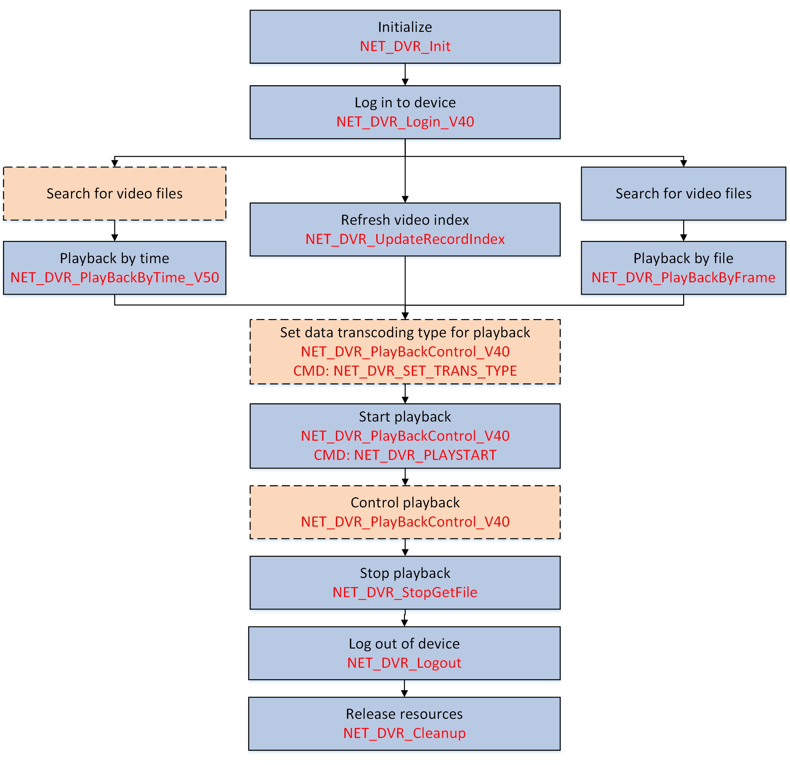

After searching the video files (optional), you can remotely play the video files stored in the device by time or by file to view the previously occurred events as needed.
Make sure you have called NET_DVR_Init to initialize the development environment.
Make sure you have called NET_DVR_Login_V40 to log in to the device.

Figure 1 Programming Flow of Starting PlaybackPlayback by file is not supported when login via ISAPI protocol.
#include <stdio.h>
#include <iostream>
#include "Windows.h"
#include "HCNetSDK.h"
using namespace std;
typedef HWND (WINAPI *PROCGETCONSOLEWINDOW)();
PROCGETCONSOLEWINDOW GetConsoleWindow;
void main() {
//---------------------------------------
// Initialize
NET_DVR_Init();
//Set connection time and reconnection time
NET_DVR_SetConnectTime(2000, 1);
NET_DVR_SetReconnect(10000, true);
//---------------------------------------
// Get window handle of control center
HMODULE hKernel32 = GetModuleHandle("kernel32");
GetConsoleWindow = (PROCGETCONSOLEWINDOW)GetProcAddress(hKernel32,"GetConsoleWindow");
//---------------------------------------
// Log in to device
LONG lUserID;
//Login parameters, including device IP address, user name, password, and so on.
NET_DVR_USER_LOGIN_INFO struLoginInfo = {0};
struLoginInfo.bUseAsynLogin = 0; //Synchronous login mode
strcpy(struLoginInfo.sDeviceAddress, "192.0.0.64"); //IP address
struLoginInfo.wPort = 8000; //Service port
strcpy(struLoginInfo.sUserName, "admin"); //User name
strcpy(struLoginInfo.sPassword, "abcd1234"); //Password
//Device information, output parameters
NET_DVR_DEVICEINFO_V40 struDeviceInfoV40 = {0};
lUserID = NET_DVR_Login_V40(&struLoginInfo, &struDeviceInfoV40);
if (lUserID < 0)
{
printf("Login failed, error code: %d\n", NET_DVR_GetLastError());
NET_DVR_Cleanup();
return;
}
HWND hWnd = GetConsoleWindow(); //Get window handle
NET_DVR_VOD_PARA_V50 struVodPara = {0};
struVodPara.dwsize = sizeof(struVodPara);
struVodPara.struIDInfo.dwsize = sizeof(NET_DVR_STREAM_INFO);
struVodPara.struIDInfo.dwChannel = 1;
struVodPara.hWnd = hWnd;
struVodPara.struBeginTime.wYear = 2019;
struVodPara.struBeginTime.byMonth = 6;
struVodPara.struBeginTime.byDay = 14;
struVodPara.struBeginTime.byHour = 9;
struVodPara.struBeginTime.byMinute = 0;
struVodPara.struBeginTime.bySecond = 0;
struVodPara.struBeginTime.byISO8601 = 0;
struVodPara.struBeginTime.cTimeDifferenceH = 0;
struVodPara.struBeginTime.cTimeDifferenceM = 0;
struVodPara.struEndTime.wYear = 2019;
struVodPara.struEndTime.byMonth = 7;
struVodPara.struEndTime.byDay = 14;
struVodPara.struEndTime.byHour = 9;
struVodPara.struEndTime.byMinute = 0;
struVodPara.struEndTime.bySecond = 0;
struVodPara.struEndTime.byISO8601 = 0;
struVodPara.struEndTime.cTimeDifferenceH = 0;
struVodPara.struEndTime.cTimeDifferenceM = 0;
struVodPara.byVolumeType = 0;
struVodPara.byDrawFrame = 0;
struVodPara.byStreamType = 0;
struVodPara.byLinkMode = 0;
struVodPara.byCourseFile = 0;
struVodPara.byOptimalStreamType = 0;
struVodPara.byDownload = 0;
struVodPara.byDisplayBufNum = 0;
sprintf((char *)struVodPara.sUserName, "%s", "admin");
sprintf((char *)struVodPara.sPassword, "%s", "12345");
struVodPara.byRemoteFile = 1;
struVodPara.byPlayMode = 0;
//---------------------------------------
//Playback by time
LONG lPlayHandle = NET_DVR_PlayBackByTime_V50(lUserID, &struVodPara);
if (lPlayHandle < 0)
{
printf("NET_DVR_PlayBackByTime_V50 fail, last error %d\n", NET_DVR_GetLastError());
NET_DVR_Logout(lUserID);
NET_DVR_Cleanup();
return;
}
//---------------------------------------
//Start playback
if(!NET_DVR_PlayBackControl_V40(hPlayback, NET_DVR_PLAYSTART,NULL, 0, NULL,NULL))
{
printf("play back control failed [%d]\n",NET_DVR_GetLastError());
NET_DVR_Logout(lUserID);
NET_DVR_Cleanup();
return;
}
Sleep(15000); //millisecond
if(!NET_DVR_StopPlayBack(hPlayback))
{
printf("failed to stop file [%d]\n",NET_DVR_GetLastError());
NET_DVR_Logout(lUserID);
NET_DVR_Cleanup();
return;
}
//Log out
NET_DVR_Logout(lUserID);
//Release SDK resource
NET_DVR_Cleanup();
return;
}
Call NET_DVR_Logout and NET_DVR_Cleanup to log out and release resources.